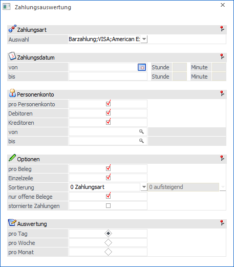
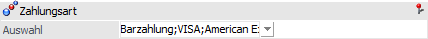
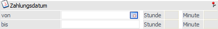
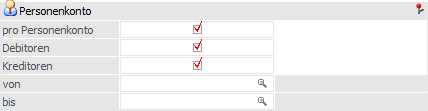
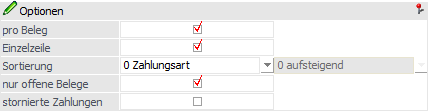
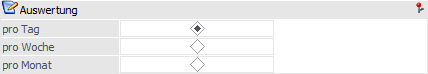
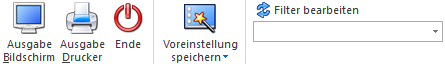

Im Menüpunkt…
1 WinLine FAKT
1 Auswertungen
1 Beleganalyse
1 Zahlungsauswertung
… können alle in der Fakturierung durchgeführten Zahlungen ausgewertet werden.

Für die Ausgabe stehen folgende Selektions- und Einstellungsmöglichkeiten zur Verfügung:
Zahlungsart

Ø Auswahl
An dieser Stelle kann mit Hilfe einer Mehrfachauswahl eine bzw. können mehrere Zahlungsarten eingeschränkt werden.
Zahlungsdatum

Ø Zahlungsdatum von / bis
Über diese Felder kann auf einen bestimmten Zeitraum eingeschränkt werden, für welchen die Auswertung ausgegeben werden soll. Werden keine Datumsgrenzen gesetzt, so kommen alle Zahlungen in die Auswertung.
Hinweis
Sobald ein Datum eingetragen wird, kann die Selektion mit Hilfe der Felder "Stunde" und "Minute" verfeinert werden.
Personenkonto

Ø pro Personenkonto
Ist die Checkbox "pro Personenkonto" aktiviert, so wird die Auswertung detailliert pro Personenkonto durchgeführt.
Ø Debitoren
Mittels der Option "Debitoren" kann festgelegt werden, ob die Debitoren auf der Auswertung ausgegeben werden sollen.
Ø Kreditoren
Mittels der Option "Kreditoren" kann festgelegt werden, ob die Kreditoren auf der Auswertung ausgegeben werden sollen.
Ø Kontonummer von / bis
An dieser Stelle kann die Auswertung auf einen bestimmten Nummernbereich einschränkt werden.
Optionen

Ø pro Beleg
Ist die Option "pro Beleg" aktiviert, so erhält man pro Kunde / Lieferant für jede Zahlungsart eine Summe über die ausgeglichenen Fakturen.
Ø Einzelzeile
Wurde die Option "pro Beleg" aktiviert, so kann an dieser Stelle definiert werden, ob zusätzlich eine detaillierte Auflistung über die einzelnen Belege erfolgen soll. Hierfür ist die Option "Einzelzeile" zu aktivieren.
Ø Sortierung
Die Sortierung der Zahlungsauswertung kann nach den folgenden Kriterien erfolgen:
ü 0 - Zahlungsart
ü 1 - Kontonummer
ü 2 - Zahlungsdatum
ü 3 - Belegnummer
Hinweis
Bei Auswahl der Sortierungsvariante "2 - Zahlungsdatum" kann zusätzlich definiert werden, ob die Sortierung "0 - aufsteigend" oder "1 - absteigend" erfolgen soll.
Ø nur offene Belege
Bei der Selektion werden Belege ausgegeben wo eine Teilzahlung erfolgt ist.
Ø stornierte Zahlungen
Durch Aktivieren dieser Option werden auch stornierte Zahlungszeilen angezeigt.
Auswertung

Ø Auswertung
An dieser Stelle kann definiert werden, wie detailliert die Auswertung erfolgen soll (bezogen auf den Zeitraum). Folgende Varianten stehen zur Verfügung.
ü Pro Tag
ü Pro Woche
ü Pro Periode
Buttons

Ø Ausgabe Bildschirm
Mit Hilfe des Buttons "Ausgabe Bildschirm" oder der Taste F5 wird die Auswertung am Bildschirm ausgegeben.
Ø Ausgabe Drucker
Durch Anwahl des Buttons "Ausgabe Drucker" wird die Auswertung am Drucker ausgegeben.
Ø Ende
Durch Anwahl des Buttons "Ende" bzw. der Taste ESC wird die Auswertung geschlossen.
Ø Voreinstellung speichern
Durch Anwahl dieses Buttons erfolgt eine benutzerspezifische Speicherung aller im Fenster getätigten Einstellungen. Diese sogenannten "Voreinstellungen" können jederzeit wieder abgerufen werden und ermöglichen dadurch ein schnelleres und zielorientierteres Arbeiten (nähere Informationen entnehmen Sie bitte dem Kapitel "Die Voreinstellungen").
Ø Filter bearbeiten
Durch Anklicken des Buttons "Filter bearbeiten" kann die Auswertung nach frei definierbaren Kriterien eingeschränkt werden.